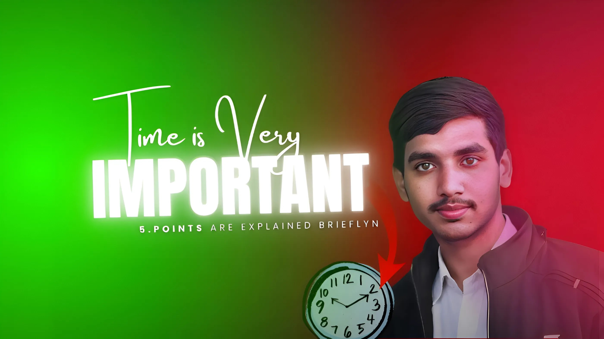

1. जब आप कोई उत्पाद खरीदते हैं, तो आप पहले कीमत और समाप्ति तिथि देखते हैं, लेकिन आप यह क्यों नहीं देखते कि आप अपना कीमती समय कहाँ खर्च कर रहे हैं?
2. आपका समय बहुत महत्वपूर्ण और अनमोल है; आप किसी भी कीमत पर अपना समय वापस नहीं खरीद सकते। इसलिए कृपया अपना समय बर्बाद न करें।
3. समय की बर्बादी कभी भी आपके जीवन में वापस नहीं आती।
4. लेकिन समय की बर्बादी समय के साथ आपकी खुशी को खत्म कर देती है।
5. समय बहुत महत्वपूर्ण है। "अपने वर्तमान समय में अच्छा करें और खुद पर विश्वास रखें।" अपना समय बर्बाद न करें। आपका आने वाला समय अच्छा होगा, और आप खुश महसूस करेंगे।
एक सरल उदाहरण से समझाता हूं कि समय बर्बाद करना हमारी खुशी को कैसे नुकसान पहुंचा सकता है। मैं आपको एक छात्र के जीवन से जुड़ा एक छोटा सा उदाहरण बताता हूं।
उदाहरण के लिए,
जब एक छात्र पढ़ाई के लिए घर से निकलता है, तो वह अपने साथ कई सपने और आशाएं लेकर जाता है। और शुरुआत के पहले महीने में वह बहुत अच्छी तरह से पढ़ाई करता है, और उसकी आशाएं और सपने सच होते दिखाई देते हैं। और एक महीने के बाद उसे लगने लगता है कि अभी तो बहुत समय बाकी है। पूरा साल बाकी है।
यह सोचकर वह अपने पढ़ाई के समय को अन्य कामों में बांट देता है जैसे कुछ देर YouTube देखना, रील्स स्क्रॉल करना, कुछ गेम खेलना, दोस्तों के साथ घूमना और मस्ती करना। इन कामों के अलावा वे पढ़ाई भी करते हैं ताकि उन्हें ऐसा न लगे कि वे अपना समय बर्बाद कर रहे हैं। लेकिन असल में, वे अपना समय बर्बाद कर रहे होते हैं।
नोट: सभी बच्चे ऐसा नहीं करते, लेकिन अधिकांश बच्चे ऐसा करते हैं। इस तरह वे अपना सबसे महत्वपूर्ण समय बर्बाद करते हैं।
और जब उनकी परीक्षाएं नजदीक आती हैं और उनके पास अंतिम 2-3 महीने बचते हैं, तब उन्हें एहसास होता है कि उन्होंने अपना समय बर्बाद कर दिया है। और वे चाहते हैं कि उन्होंने पूरे साल अच्छी तरह से पढ़ाई की होती।
नोट: यहां, तीसरा बिंदु लागू होता है - समय की बर्बादी कभी भी आपके जीवन में वापस नहीं आती
इसलिए आपको पछतावा नहीं करना चाहिए और बचे हुए समय में अच्छी तरह से पढ़ाई करनी चाहिए। पछतावा करने और न पढ़ने से आपके बचे हुए 2-3 महीने भी बर्बाद हो जाएंगे। कुछ छात्र अपनी पढ़ाई जारी रखते हैं, लेकिन तब तक उनका पाठ्यक्रम एक पहाड़ जैसा लगने लगता है क्योंकि उनके पास कई अध्यायों का बैकलॉग होता है, और उन्हें उन्हें याद भी करना होता है।
अगर उन्होंने पूरे साल अच्छी तरह से पढ़ाई की होती, तो उनका पाठ्यक्रम एक पत्थर के टुकड़े जैसा लगता, यानी उनका पाठ्यक्रम उन्हें बहुत आसान और छोटा लगता, लेकिन बहुत सारा बैकलॉग करके वे इन पत्थर के टुकड़ों को एक बड़े पहाड़ में बदल देते हैं, यानी उनका पाठ्यक्रम बहुत बड़ा लगने लगता है, और पाठ्यक्रम को याद करना और पूरा करना बहुत मुश्किल लगता है। आपने समझ लिया होगा कि एक ही पाठ्यक्रम एक को आसान और छोटा क्यों लगा और दूसरे को मुश्किल और बड़ा क्यों लगा।
नोट: यहां मेरा दूसरा बिंदु लागू होता है
आपका समय बहुत महत्वपूर्ण और अनमोल है। आप किसी भी कीमत पर अपना समय वापस नहीं खरीद सकते। इसलिए कृपया अपना समय बर्बाद न करें।
- और वे 2-3 महीनों के लिए सभी सोशल मीडिया को बंद कर देते हैं और यहां तक कि अपने दोस्तों के साथ घूमना भी बंद कर देते हैं। यह उनके लिए आसान काम नहीं होता।
उनके सपने, जो शुरुआती महीनों में सच होते दिखाई देते थे, अब टूटते हुए दिखाई देते हैं। और वे उच्च दबाव और बहुत दर्द को संभालते हुए पढ़ाई करते हैं। मैं शारीरिक दर्द की बात नहीं कर रहा हूँ। इस समय जो दर्द होता है वह कुछ अलग होता है, जिससे उसकी आँखें आंसुओं से भर जाती हैं। यहां तक कि कभी-कभी लाइब्रेरी में पढ़ते समय भी उसकी आँखें आंसुओं से भर जाती हैं, लेकिन वह इसे छिपा लेता है। और जब वह अकेला होता है, तो वह खुलकर रोता है, और उसे लगता है कि उसकी खुशी कहीं खो गई है।
यहां, मेरा चौथा बिंदु लागू होता है:
4. लेकिन समय की बर्बादी समय के साथ आपकी खुशी को खत्म कर देती है।
मुझे आशा है कि आप समय के महत्व को समझ गए होंगे।
इसलिए कृपया अपना समय बर्बाद न करें।
समय महत्वपूर्ण है।
अपने वर्तमान समय में अच्छा करें और खुद पर विश्वास रखें।
अपना समय बर्बाद न करें।
आपका आने वाला समय अच्छा होगा, और
आप खुश महसूस करेंगे।

Aarif Alam
Writer & Mindfulness Practitioner passionate about authentic living and conscious time management.